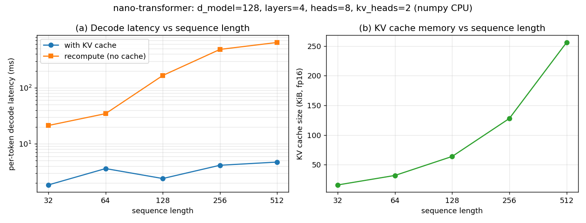

A LLaMA-style decoder inference engine from scratch in numpy — verified bit-exact
Every production LLM serving stack (vLLM, TensorRT-LLM, llama.cpp) rests on a small set of inference primitives: normalized residual blocks, rotary position embeddings, grouped-query attention, gated FFNs, and incremental decoding against a KV cache. These are usually hidden inside framework kernels, so it is hard to verify what each piece computes, what it costs, and why the KV cache matters so much.
Most "build a transformer from scratch" material stops at a training loop for a toy model. It rarely (a) verifies each inference primitive against an independent reference implementation with assert-level tolerances, (b) proves that incremental cached decoding is numerically identical to a full forward pass, or (c) measures the actual latency and memory scaling of KV-cache vs recompute decoding on the same code.
src/llm_inference_engine/transformer/model.py implements the full inference path in ~350 lines of numpy with no ML framework:
TransformerConfig, RMSNorm, build_rope_cache / apply_rope (LLaMA-style halves pairing), repeat_kv for GQA, SwiGLU FFN.KVCache: preallocated per-layer k/v buffers with append, advance, get, and an analytic bytes_for footprint helper.TransformerModel.forward(tokens) (causally masked full pass), step(token, cache) (single-token incremental decode attending over the cached prefix), prefill, and generate (greedy or temperature/top-k).experiments/run_experiments.py (seeded, np.random.default_rng(7)): four assert-level numerical verifications, latency benchmarks (median of 15 reps via time.perf_counter), analytic KV-memory accounting, and chart + markdown report generation into results/.| Check | Max abs diff | Verdict |
|---|---|---|
| RMSNorm vs naive loop | 4.77e-07 | match |
| RoPE vs complex-exponential reference | 2.38e-07 | match |
| GQA vs tied full-head attention | 0.0 | bit-exact |
| KV-cache decode vs full forward | 0.0 | bit-exact |
| Seq len | Decode cached | Decode recompute | Speedup |
|---|---|---|---|
| 32 | ~1 ms/tok | ~21 ms/tok | 11.5x |
| 512 | 4.72 ms/tok | 645.68 ms/tok | 136.8x |
KV-cache memory (fp16, analytic): 16 KiB at 32 tokens → 256 KiB at 512. Prefill: 13.5 ms at 32 → 557.3 ms at 512.

experiments/run_experiments.py — re-running reproduces these exactly.src/llm_inference_engine/transformer/
model.py # config, RMSNorm, RoPE, GQA, SwiGLU, KVCache, generate
01-nano-transformer/
experiments/run_experiments.py # 4 verifications + latency benchmarks
results/ # results.md + charts.png (generated)
Full source, tests, and experiment code: 01-nano-transformer/ ·
Run: cd 01-nano-transformer && python3 experiments/run_experiments.py